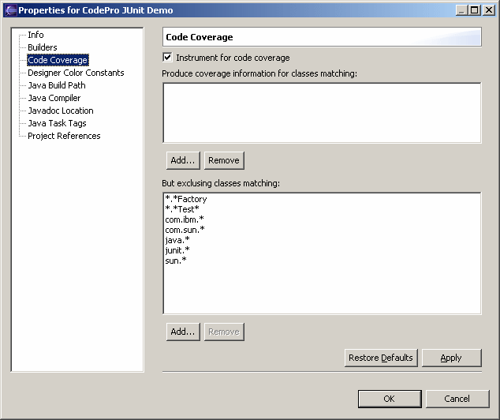

|  Each project has a
Code Coverage property sheet as shown
above. This property sheet contains a check box labeled
"Instrument for code coverage" that allows you to control
whether the class files within the project are to be instrumented.
The property sheet also allows you to control which class files are
instrumented. This is done through the use of two lists of patterns:
the inclusion list and the exclusion list.
The patterns are simple patterns using the standard pattern matching
characters: "*" matches zero or more characters, "$"
matches a single character. They are simple in the sense that they
only match strings, not structures. For example, the pattern
junit.*
will match any class name beginning with "junit.",
whether or not it contains other periods. This means, for example,
that the pattern will match the class
junit.framework.TestCase
Similarly, the pattern
*Test
will match any class whose name ends in "Test" whether
the class is defined in your code or in code supplied by a third party.
The inclusion list specifies which classes could be instrumented
(that is, have coverage information recorded for them. If the list is
empty, all classes are eligible. If the list contains one or more
patterns, only those classes whose fully qualified name matches at
least one pattern are eligible
The exclusion list specifies which of the eligible classes will not
be instrumented. A class will be excluded if it matches one or more
of the patterns in the list. If the list is empty, then all of the
eligible classes will be instrumented.
|